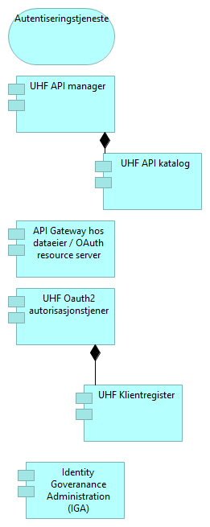

Løsningsmønstre forespørsel UHF Table of Contents 1. Om Løsningsmønstre forespørsel UHF 2. Applikasjonsoversikt forespørsel 2.1. Applikasjonsoversikt forespørsel - oversikt 2.2. UHF Infrastruktur 2.2.1. Tokentjeneste 2.2.2. Ressursportal 2.2.3. Registrere API i UHF sektoren 2.2.4. UHF tildel rettigheter til klienter 2.3. UiX 2.3.1. Kildedata 2.3.2. API Gateway hos dataeier / OAuth resource server 2.3.3. Kildedata 2.4. UiO 2.4.1. Kildedata 2.4.2. API Gateway hos dataeier / OAuth resource server 2.4.3. Kildedata 3. Applikasjonsoversikt forsepørsel forenklet 3.1. Applikasjonsoversikt forsepørsel forenklet - oversikt 3.2. UHF Infrastruktur 3.2.1. Ressursportal 3.2.2. Utvikle og vedlikeholde API 3.3. UiX 3.3.1. API Gateway hos dataeier / OAuth resource server 3.4. UiO 3.4.1. API Gateway hos dataeier / OAuth resource server 4. Applikasjonsoversikt forsepørsel integrert med IAM 4.1. Applikasjonsoversikt forsepørsel integrert med IAM - oversikt 4.2. Sluttbruker 4.3. Klient 4.4. Identitetstilbyder 4.5. UHF Infrastruktur 4.5.1. UHF tildel rettigheter til klienter 4.5.2. Ressursportal 4.6. Roller og tilgangsregler 4.7. Attributter /grunndata 4.8. UiX 4.8.1. Kildedata 4.8.2. Kildedata 4.8.3. API Gateway hos dataeier / OAuth resource server 4.9. Autentiseringstjeneste 5. Applikasjonsoversikt forsepørsel integrert nasjonalt 5.1. Applikasjonsoversikt forsepørsel integrert nasjonalt - oversikt 5.2. UHF Infrastruktur 5.2.1. Tokentjeneste 5.2.2. UHF tildel rettigheter til klienter 5.2.3. Registrere API i UHF sektoren 5.2.4. Ressursportal 5.3. Nasjonal infrastruktur 5.3.1. Maskinporten 5.3.2. Altinn autorisasjon 5.3.3. Felles API-katalog 6. Avgi data - løsningsmønster UHF 6.1. Avgi data - løsningsmønster UHF - oversikt 6.2. Egen autorisasjons-komponent 6.3. Altinn autorisasjon 6.4. Datatilbyder 6.5. Tilgangskontroll-tjeneste 6.6. Avgi forespurte data gjennom API 6.6.1. Motta forespørsel om oppslag 6.6.2. Avgi data 6.6.3. Autentisere konsument 6.6.4. Kontroller tilgang 6.7. Datautvekslings-tjeneste 6.8. Datautvekslings-tjeneste 6.9. Tokenvaliderings-tjeneste 6.10. Avgi data 6.11. API Gateway hos dataeier / OAuth resource server 7. Dataobjekter eOppslag - med metadata UHF 7.1. Dataobjekter eOppslag - med metadata UHF - oversikt 7.2. API-katalogen 7.3. Tilganger konsument/representasjonsforhold 7.4. Scope-metadata 7.5. Samtykkemetadata 7.6. API-katalogmetadata 7.7. Maskinporten 7.8. Altinn autorisasjon 7.9. Beskrivelse API 7.9.1. Delegerbar ressurs 7.9.2. Endepunkt (adresse) 7.10. Beskrivelse av aktør som kan innhente samtykke 8. Dataobjekter eOppslag UHF 8.1. Dataobjekter eOppslag UHF - oversikt 8.2. API-katalogen 8.3. Tilganger konsument/representasjonsforhold 8.4. Maskinporten 8.5. Altinn autorisasjon 8.6. Beskrivelse API 8.6.1. Endepunkt (adresse) 8.6.2. Delegerbar ressurs 8.7. Beskrivelse av aktør som kan innhente samtykke 8.8. UHF Oauth2 autorisasjonstjener 9. Delegere rettigheter til databehandler - løsningsmønster UHF 9.1. Delegere rettigheter til databehandler - løsningsmønster UHF - oversikt 9.2. Registering av representasjonsforhold 9.3. Delegerbar ressurs 9.4. Delegering av rettigheter til databehandler (leverandør) 9.4.1. Inngå avtale med leverandør 9.4.2. Registrere delegert tilgang 9.5. Delegere rettigheter til databehandler 9.6. Altinn autorisasjon 9.7. Samhandlingsaktør 10. Felleskomponenter 10.1. Felleskomponenter - oversikt 10.2. Autentiseringstjeneste 10.3. UHF API manager 10.3.1. UHF API katalog 10.4. API Gateway hos dataeier / OAuth resource server 10.5. UHF Oauth2 autorisasjonstjener 10.5.1. UHF Klientregister 10.6. Identity Goveranance Administration (IGA) 11. Få tilgang til data - løsningsmønster UHF 11.1. Få tilgang til data - løsningsmønster UHF - oversikt 11.2. Data-konsument 11.3. Beskrivelse API 11.4. API-søk 11.5. Få tilgang til data (konsument) 11.6. UHF API katalog 11.7. UHF tildel rettigheter til klienter 11.8. API tilgangs-forespørsel 11.9. UHF Oauth2 autorisasjonstjener 11.9.1. UHF Klientregister 11.10. OAUTH scopes 12. Innhente data - løsningsmønster UHF 12.1. Innhente data - løsningsmønster UHF - oversikt 12.2. Maskinporten 12.3. Data-konsument 12.4. Tokentjeneste 12.5. Virksomhetssertifikat 12.6. Innhente data 12.7. Endepunkt (adresse) 12.8. Oppslag representasjons-forhold 12.9. Slå opp data gjennom et API 12.9.1. Utfør tjenestekall 12.9.2. Innhent samtykke ved behov 12.9.3. Hent teknisk endepunkt ved behov 12.9.4. Be om tilgangstoken 12.10. Tilganger konsument 12.11. Altinn autorisasjon 12.12. Felles API-katalog 12.13. Adressetjeneste 12.14. Datautvekslings-tjeneste 12.15. Samtykkeregistererings-tjeneste 12.16. Altinn autorisasjon 12.17. API Gateway hos dataeier / OAuth resource server 12.18. UHF Oauth2 autorisasjonstjener 12.19. UHF API katalog 13. Registrere API UHF 13.1. Registrere API UHF - oversikt 13.2. OAUTH scopes 13.3. Token-egenskaper 13.4. Datatilbyder 13.5. Maskinporten 13.6. Registrere API i UHF sektoren 13.7. API Beskrivelse 13.8. UHF definer rettighetter knyttet til APIer 13.9. Registrere API 13.10. Registrere API 13.11. Felles API-katalog 13.12. UHF API manager 13.12.1. UHF API katalog 14. Tilgjengeliggjøre data etter forspørsel løsningsmønster UHF 14.1. Tilgjengeliggjøre data etter forspørsel løsningsmønster UHF - oversikt 14.2. Tilganger konsument 14.3. Datatilbyder 14.4. Tilgjengeliggjør data etter forselpørsel 14.4.1. Tildele tilganger til API 14.4.2. Inngå avtale om tilgang til data 14.4.3. Registrere brukere av samtykke 14.5. Maskinporten 14.6. Altinn autorisasjon 14.7. Registrere samtykkebasert tilgang 14.8. Aktører som kan innhente samtykke for bruk av API 14.9. Tilgjengeliggjøre data etter forespørsel 14.10. API tilgangs-forespørsel 14.11. Godkjenn tilgang 14.12. UHF tildel rettigheter til klienter 14.13. Ressursportal 14.14. Forespør dataeier 1. Om Løsningsmønstre forespørsel UHF Løsningsmønstre forespørsel UHF Beskrivelse… (derekte i representation-objektet) 2. Applikasjonsoversikt forespørsel 2.1. Applikasjonsoversikt forespørsel - oversikt Figure 1. Applikasjonsoversikt forespørsel 2.2. UHF Infrastruktur 2.2.1. Tokentjeneste Tjeneste som utsteder sikkerhetsbilletter. Sikkerhetsbillett utstedes basert på tildelte rettigheter og eventuelle representasjonsforhold. 2.2.2. Ressursportal 2.2.2.1. UHF API manager Administrativ komponent som kontrollerer policy og livssyklus for definisjon og forvaltning av API. Tilganger gjennom et API defineres i API manager og tildeles av autorisasjonstjener. Ansvaret til API manager inkluderer: Sentralisert API administrasjon og forvaltning av API-katalogen Håndtering av registrerings- og introduksjonsprosesser for API utviklere Håndtere livssyklusen til et API Ivareta registrering, forvaltning og og utvikling av klientrettigheter Hva tilbyr API av datamodell Hvordan ønsker API å sikre seg selv En klient må forholde seg til 2.2.2.1.1. UHF API katalog Oversikt over alle API som er registrert 2.2.2.2. UHF Oauth2 autorisasjonstjener Autorisasjonstjeneter realiserer tilgangskontroll gjennom å utstede OpenID Connect eller OAuth 2 grants og tokens. En autorisasjonstjener er også brukt til å realisere tilgangs policy. Scope (rettighet) og Audience (identifikator eller ressurs-server f. eks. FS) Per i dag er Scopes er grovkornet Rich authorization requsts (ny spesifikasjon) for å utvide scope begrep i IETF underenhet og behandlingssted, behandlingsgrunnlag og roller jobbes det med. 2.2.2.2.1. UHF Klientregister Oversikt over alle klienter som er blitt tildelt tilgang til ressurser. 2.2.3. Registrere API i UHF sektoren 2.2.4. UHF tildel rettigheter til klienter 2.3. UiX 2.3.1. Kildedata 2.3.2. API Gateway hos dataeier / OAuth resource server API gateway beskytter ressurser og monitorerer tilgang. Den håndhever tilgangsstyring ved å validere aksesstokens og utfører eventuell fin-granulert tilgangskontroll. Den håndhever også volumbegrenseninger og samler data om bruken av APIer (logging). Komponent som beskytter ressursene og monitorerer tilgang inklusivt: Validere tilgangstoken Beskytte mot inntrenging og andre trusler Håndtere volumbegrensninger og andre abonnementsordninger Håndheve tilgangsstyring Samle inn data om bruken av API-er [orkestrering mellom interntjeneser??] Prinsipp fra Steiner: Oppgaver både sikkerhetsperspektiv og forvaltningsperspektivet Dersom gatway skal stå for sikkerheten, MÅ VÆRE SIKKER PÅ at API ikke kan nås utenom gateway Noen må passe VELDIG godt på gatewayen og holder den oppdatert. Det må være et tydeligvalg om hvem (gateway eller API) har ansvar for sikkerhetsmessig. 2.3.3. Kildedata 2.4. UiO 2.4.1. Kildedata 2.4.2. API Gateway hos dataeier / OAuth resource server API gateway beskytter ressurser og monitorerer tilgang. Den håndhever tilgangsstyring ved å validere aksesstokens og utfører eventuell fin-granulert tilgangskontroll. Den håndhever også volumbegrenseninger og samler data om bruken av APIer (logging). Komponent som beskytter ressursene og monitorerer tilgang inklusivt: Validere tilgangstoken Beskytte mot inntrenging og andre trusler Håndtere volumbegrensninger og andre abonnementsordninger Håndheve tilgangsstyring Samle inn data om bruken av API-er [orkestrering mellom interntjeneser??] Prinsipp fra Steiner: Oppgaver både sikkerhetsperspektiv og forvaltningsperspektivet Dersom gatway skal stå for sikkerheten, MÅ VÆRE SIKKER PÅ at API ikke kan nås utenom gateway Noen må passe VELDIG godt på gatewayen og holder den oppdatert. Det må være et tydeligvalg om hvem (gateway eller API) har ansvar for sikkerhetsmessig. 2.4.3. Kildedata 3. Applikasjonsoversikt forsepørsel forenklet 3.1. Applikasjonsoversikt forsepørsel forenklet - oversikt Figure 2. Applikasjonsoversikt forsepørsel forenklet 3.2. UHF Infrastruktur 3.2.1. Ressursportal 3.2.1.1. UHF API manager Administrativ komponent som kontrollerer policy og livssyklus for definisjon og forvaltning av API. Tilganger gjennom et API defineres i API manager og tildeles av autorisasjonstjener. Ansvaret til API manager inkluderer: Sentralisert API administrasjon og forvaltning av API-katalogen Håndtering av registrerings- og introduksjonsprosesser for API utviklere Håndtere livssyklusen til et API Ivareta registrering, forvaltning og og utvikling av klientrettigheter Hva tilbyr API av datamodell Hvordan ønsker API å sikre seg selv En klient må forholde seg til 3.2.1.1.1. UHF API katalog Oversikt over alle API som er registrert 3.2.1.2. UHF Oauth2 autorisasjonstjener Autorisasjonstjeneter realiserer tilgangskontroll gjennom å utstede OpenID Connect eller OAuth 2 grants og tokens. En autorisasjonstjener er også brukt til å realisere tilgangs policy. Scope (rettighet) og Audience (identifikator eller ressurs-server f. eks. FS) Per i dag er Scopes er grovkornet Rich authorization requsts (ny spesifikasjon) for å utvide scope begrep i IETF underenhet og behandlingssted, behandlingsgrunnlag og roller jobbes det med. 3.2.1.2.1. UHF Klientregister Oversikt over alle klienter som er blitt tildelt tilgang til ressurser. 3.2.2. Utvikle og vedlikeholde API 3.3. UiX 3.3.1. API Gateway hos dataeier / OAuth resource server API gateway beskytter ressurser og monitorerer tilgang. Den håndhever tilgangsstyring ved å validere aksesstokens og utfører eventuell fin-granulert tilgangskontroll. Den håndhever også volumbegrenseninger og samler data om bruken av APIer (logging). Komponent som beskytter ressursene og monitorerer tilgang inklusivt: Validere tilgangstoken Beskytte mot inntrenging og andre trusler Håndtere volumbegrensninger og andre abonnementsordninger Håndheve tilgangsstyring Samle inn data om bruken av API-er [orkestrering mellom interntjeneser??] Prinsipp fra Steiner: Oppgaver både sikkerhetsperspektiv og forvaltningsperspektivet Dersom gatway skal stå for sikkerheten, MÅ VÆRE SIKKER PÅ at API ikke kan nås utenom gateway Noen må passe VELDIG godt på gatewayen og holder den oppdatert. Det må være et tydeligvalg om hvem (gateway eller API) har ansvar for sikkerhetsmessig. 3.4. UiO 3.4.1. API Gateway hos dataeier / OAuth resource server API gateway beskytter ressurser og monitorerer tilgang. Den håndhever tilgangsstyring ved å validere aksesstokens og utfører eventuell fin-granulert tilgangskontroll. Den håndhever også volumbegrenseninger og samler data om bruken av APIer (logging). Komponent som beskytter ressursene og monitorerer tilgang inklusivt: Validere tilgangstoken Beskytte mot inntrenging og andre trusler Håndtere volumbegrensninger og andre abonnementsordninger Håndheve tilgangsstyring Samle inn data om bruken av API-er [orkestrering mellom interntjeneser??] Prinsipp fra Steiner: Oppgaver både sikkerhetsperspektiv og forvaltningsperspektivet Dersom gatway skal stå for sikkerheten, MÅ VÆRE SIKKER PÅ at API ikke kan nås utenom gateway Noen må passe VELDIG godt på gatewayen og holder den oppdatert. Det må være et tydeligvalg om hvem (gateway eller API) har ansvar for sikkerhetsmessig. 4. Applikasjonsoversikt forsepørsel integrert med IAM 4.1. Applikasjonsoversikt forsepørsel integrert med IAM - oversikt Figure 3. Applikasjonsoversikt forsepørsel integrert med IAM 4.2. Sluttbruker 4.3. Klient 4.4. Identitetstilbyder 4.5. UHF Infrastruktur 4.5.1. UHF tildel rettigheter til klienter 4.5.2. Ressursportal 4.5.2.1. UHF Oauth2 autorisasjonstjener Autorisasjonstjeneter realiserer tilgangskontroll gjennom å utstede OpenID Connect eller OAuth 2 grants og tokens. En autorisasjonstjener er også brukt til å realisere tilgangs policy. Scope (rettighet) og Audience (identifikator eller ressurs-server f. eks. FS) Per i dag er Scopes er grovkornet Rich authorization requsts (ny spesifikasjon) for å utvide scope begrep i IETF underenhet og behandlingssted, behandlingsgrunnlag og roller jobbes det med. 4.5.2.1.1. UHF Klientregister Oversikt over alle klienter som er blitt tildelt tilgang til ressurser. 4.6. Roller og tilgangsregler 4.7. Attributter /grunndata 4.8. UiX 4.8.1. Kildedata 4.8.2. Kildedata 4.8.3. API Gateway hos dataeier / OAuth resource server API gateway beskytter ressurser og monitorerer tilgang. Den håndhever tilgangsstyring ved å validere aksesstokens og utfører eventuell fin-granulert tilgangskontroll. Den håndhever også volumbegrenseninger og samler data om bruken av APIer (logging). Komponent som beskytter ressursene og monitorerer tilgang inklusivt: Validere tilgangstoken Beskytte mot inntrenging og andre trusler Håndtere volumbegrensninger og andre abonnementsordninger Håndheve tilgangsstyring Samle inn data om bruken av API-er [orkestrering mellom interntjeneser??] Prinsipp fra Steiner: Oppgaver både sikkerhetsperspektiv og forvaltningsperspektivet Dersom gatway skal stå for sikkerheten, MÅ VÆRE SIKKER PÅ at API ikke kan nås utenom gateway Noen må passe VELDIG godt på gatewayen og holder den oppdatert. Det må være et tydeligvalg om hvem (gateway eller API) har ansvar for sikkerhetsmessig. 4.9. Autentiseringstjeneste Tjeneste som benyttes av tilbyder for å autentisere aktuell konsument. 5. Applikasjonsoversikt forsepørsel integrert nasjonalt 5.1. Applikasjonsoversikt forsepørsel integrert nasjonalt - oversikt Figure 4. Applikasjonsoversikt forsepørsel integrert nasjonalt 5.2. UHF Infrastruktur 5.2.1. Tokentjeneste Tjeneste som utsteder sikkerhetsbilletter. Sikkerhetsbillett utstedes basert på tildelte rettigheter og eventuelle representasjonsforhold. 5.2.2. UHF tildel rettigheter til klienter 5.2.3. Registrere API i UHF sektoren 5.2.4. Ressursportal 5.2.4.1. UHF Oauth2 autorisasjonstjener Autorisasjonstjeneter realiserer tilgangskontroll gjennom å utstede OpenID Connect eller OAuth 2 grants og tokens. En autorisasjonstjener er også brukt til å realisere tilgangs policy. Scope (rettighet) og Audience (identifikator eller ressurs-server f. eks. FS) Per i dag er Scopes er grovkornet Rich authorization requsts (ny spesifikasjon) for å utvide scope begrep i IETF underenhet og behandlingssted, behandlingsgrunnlag og roller jobbes det med. 5.2.4.1.1. UHF Klientregister Oversikt over alle klienter som er blitt tildelt tilgang til ressurser. 5.2.4.2. UHF API manager Administrativ komponent som kontrollerer policy og livssyklus for definisjon og forvaltning av API. Tilganger gjennom et API defineres i API manager og tildeles av autorisasjonstjener. Ansvaret til API manager inkluderer: Sentralisert API administrasjon og forvaltning av API-katalogen Håndtering av registrerings- og introduksjonsprosesser for API utviklere Håndtere livssyklusen til et API Ivareta registrering, forvaltning og og utvikling av klientrettigheter Hva tilbyr API av datamodell Hvordan ønsker API å sikre seg selv En klient må forholde seg til 5.2.4.2.1. UHF API katalog Oversikt over alle API som er registrert 5.3. Nasjonal infrastruktur 5.3.1. Maskinporten Maskinporten er en løsning for tilgangsstyring for virksomheter som utveksler data. Løsningen garanterer identiteten mellom virksomheter, og sørger for maskin-til-maskin autentisering. Maskinporten sørger for sikker autentisering og tilgangskontroll for datautveksling mellom virksomheter, maskin til maskin. Dette gir teknisk og organisatorisk samhandlingsevne. Mer om Maskinporten: https://www.digdir.no/digitale-felleslosninger/maskinporten/869 5.3.2. Altinn autorisasjon Autorisasjonskomponenten i Altinn som gir muligheter til å delegere rettigheter til andre organisasjoner eller personer. Rettigheter til bruk av autorisasjonskomponenten baserer seg på registrerte roller i Enhetsregisteret. Altinn autorisasjon leverer også tjenester for å registrere og kontrollere samtykke gitt av person eller virksomhet. Altinn autorisasjon gir teknisk samhandlingsevne ved at bruker logger inn med elektronisk ID, autorisasjonskomponenten sjekker at bruker har de tilgangene som kreves for å ta i bruk aktuell tjeneste. Dersom en privatperson skal ta i bruk en tjeneste på vegne av en virksomhet, gjøres det et oppslag mot Enhetsregisteret for å bekrefte at personen har en rolle på vegne av virksomheten. Dette gir organisatorisk samhandlingsevne. Mer om Altinn autorisasjon: https://www.altinndigital.no/produkter/styring-av-tilgang/ 5.3.3. Felles API-katalog Del av Felles datakatalog som gir mulighet for å søke etter API-er og lese API-spesifikasjoner https://fellesdatakatalog.brreg.no/apis 6. Avgi data - løsningsmønster UHF 6.1. Avgi data - løsningsmønster UHF - oversikt En arbeidsflyt en tilbyder av data utfører for å svare på en dataforespørsel. Tilbyder mottar forespørsel om oppslag med et aksesstoken. Klienten som forespør autentiseres og token valideres. Eventuelt mer fin-granulert tilgangskontroll utføres og data returneres. Tilgang kontrolleres kun dersom det er snakk om et sikret API. Figure 5. Avgi data - løsningsmønster UHF 6.2. Egen autorisasjons-komponent Komponent for å håndheve virksomhetens regler for tilgang. Også kalt policy enforcement point (PEP). 6.3. Altinn autorisasjon Autorisasjonskomponenten i Altinn som gir muligheter til å delegere rettigheter til andre organisasjoner eller personer. Rettigheter til bruk av autorisasjonskomponenten baserer seg på registrerte roller i Enhetsregisteret. Altinn autorisasjon leverer også tjenester for å registrere og kontrollere samtykke gitt av person eller virksomhet. Altinn autorisasjon gir teknisk samhandlingsevne ved at bruker logger inn med elektronisk ID, autorisasjonskomponenten sjekker at bruker har de tilgangene som kreves for å ta i bruk aktuell tjeneste. Dersom en privatperson skal ta i bruk en tjeneste på vegne av en virksomhet, gjøres det et oppslag mot Enhetsregisteret for å bekrefte at personen har en rolle på vegne av virksomheten. Dette gir organisatorisk samhandlingsevne. Mer om Altinn autorisasjon: https://www.altinndigital.no/produkter/styring-av-tilgang/ 6.4. Datatilbyder Tilbyder av data til andre aktører. API Eiere (kan eie Data som API gir tilgang til, eller system som tilbyr APIet)?? Når virksomheten tilbyr åpne data, vil det være virksomheten som eier dataene. (men det bør vel definere et domen-eier innenfor virksomheten) Data eier på to nivå: f. eks. studieavdelingen (er ikke dette behandlingsansvarlig?) spør studenten om de gir samtykke til å gi tilgang til data om studenten som hen eier. 6.5. Tilgangskontroll-tjeneste Tjeneste for å sjekke rettigheter til data. Kan være eksterne eller interne tjenester. Disse rettigheter kan være mer finkornet enn tilgangene administrert av autorisasjonstjeneren. Eksempler på rettigheter kan komme av samtykker fra person eller virksomhet, eller rollebasert fra vergemål, familierelasjon el. 6.6. Avgi forespurte data gjennom API Prosessen med å avgi data på forespørsel gjennom et egnet API. 6.6.1. Motta forespørsel om oppslag Motta forespørsler fra API-konsument om å avgi data. 6.6.2. Avgi data Prosessen med å gi svar på forespørselen. 6.6.3. Autentisere konsument Prosessen med å autentisere en konsument. 6.6.4. Kontroller tilgang Kontroll og håndheving av konsumentens rettigheter til å få forespurte data. I tillegg til "validering av sikkerhetsbillet", kan det være behov for kontroll mot virksomhetsinterne policies. 6.7. Datautvekslings-tjeneste Tjeneste for utveksling av data over aktuell transportprotokoll, f.eks, gjennom asynkrone medlinger eller synkrone API-oppslag. 6.8. Datautvekslings-tjeneste Tjeneste for utveksling av data over aktuell transportprotokoll, f.eks, gjennom asynkrone medlinger eller synkrone API-oppslag. 6.9. Tokenvaliderings-tjeneste Tjeneste som benyttes av tilbyder for å validere og kontrollere autentisiteten til et OAUTH2 token fra Maskinporten 6.10. Avgi data Evne til å avgi data på forespørsel. Kan omfatte tilgangsstyring. 6.11. API Gateway hos dataeier / OAuth resource server API gateway beskytter ressurser og monitorerer tilgang. Den håndhever tilgangsstyring ved å validere aksesstokens og utfører eventuell fin-granulert tilgangskontroll. Den håndhever også volumbegrenseninger og samler data om bruken av APIer (logging). Komponent som beskytter ressursene og monitorerer tilgang inklusivt: Validere tilgangstoken Beskytte mot inntrenging og andre trusler Håndtere volumbegrensninger og andre abonnementsordninger Håndheve tilgangsstyring Samle inn data om bruken av API-er [orkestrering mellom interntjeneser??] Prinsipp fra Steiner: Oppgaver både sikkerhetsperspektiv og forvaltningsperspektivet Dersom gatway skal stå for sikkerheten, MÅ VÆRE SIKKER PÅ at API ikke kan nås utenom gateway Noen må passe VELDIG godt på gatewayen og holder den oppdatert. Det må være et tydeligvalg om hvem (gateway eller API) har ansvar for sikkerhetsmessig. 7. Dataobjekter eOppslag - med metadata UHF 7.1. Dataobjekter eOppslag - med metadata UHF - oversikt Figure 6. Dataobjekter eOppslag - med metadata UHF 7.2. API-katalogen API-katalogen er en del av Felles datakatalog som inneholder API-beskrivelser med endepunktsadresser og kobling til datasett. 7.3. Tilganger konsument/representasjonsforhold Dataobjekt som beskriver hvilke tilganger til ressurser en representant (leverandør) skal ha på vegne av konsument. 7.4. Scope-metadata 7.5. Samtykkemetadata 7.6. API-katalogmetadata 7.7. Maskinporten Maskinporten er en løsning for tilgangsstyring for virksomheter som utveksler data. Løsningen garanterer identiteten mellom virksomheter, og sørger for maskin-til-maskin autentisering. Maskinporten sørger for sikker autentisering og tilgangskontroll for datautveksling mellom virksomheter, maskin til maskin. Dette gir teknisk og organisatorisk samhandlingsevne. Mer om Maskinporten: https://www.digdir.no/digitale-felleslosninger/maskinporten/869 7.8. Altinn autorisasjon Autorisasjonskomponenten i Altinn som gir muligheter til å delegere rettigheter til andre organisasjoner eller personer. Rettigheter til bruk av autorisasjonskomponenten baserer seg på registrerte roller i Enhetsregisteret. Altinn autorisasjon leverer også tjenester for å registrere og kontrollere samtykke gitt av person eller virksomhet. Altinn autorisasjon gir teknisk samhandlingsevne ved at bruker logger inn med elektronisk ID, autorisasjonskomponenten sjekker at bruker har de tilgangene som kreves for å ta i bruk aktuell tjeneste. Dersom en privatperson skal ta i bruk en tjeneste på vegne av en virksomhet, gjøres det et oppslag mot Enhetsregisteret for å bekrefte at personen har en rolle på vegne av virksomheten. Dette gir organisatorisk samhandlingsevne. Mer om Altinn autorisasjon: https://www.altinndigital.no/produkter/styring-av-tilgang/ 7.9. Beskrivelse API Dataobjekt som er en maskinlesbar beskrivelse av REST API-er iht. Open API Specification. Dette er formatet som benyttes for å registrere et API i felles API-katalog Ønsker å bruke Open API spesifikasjon 7.9.1. Delegerbar ressurs Dataobjekt som beskriver en ressurs, f.eks. et API, som det kan gis rettigheter til gjennom et representasjonsforhold. 7.9.1.1. OAUTH scopes Hvordan får Dataobjekt som som kan beskrives som en ressurs-definisjon, og et token er som regel knyttet til ett eller flere scopes. Scopes benyttes til å styre tilganger til API-er og operasjoner, samt eventuelt hva slags responser man får fra API-er. Fra eHelse: Regler for et API som beskriver hvilke tilganger en datakonsument (representert ved organisasjonsnummer) og deres klienter skal ha tilgang til (utstedt token for). 7.9.2. Endepunkt (adresse) Dataobjekt som representerer teknisk adresse til et API eller ressurs. 7.10. Beskrivelse av aktør som kan innhente samtykke Dataobjekt som beskriver en datakonsument som har rett til å innhente samtykke om å slå opp data. Viktig innholde er bl.a. URL 8. Dataobjekter eOppslag UHF 8.1. Dataobjekter eOppslag UHF - oversikt Figure 7. Dataobjekter eOppslag UHF 8.2. API-katalogen API-katalogen er en del av Felles datakatalog som inneholder API-beskrivelser med endepunktsadresser og kobling til datasett. 8.3. Tilganger konsument/representasjonsforhold Dataobjekt som beskriver hvilke tilganger til ressurser en representant (leverandør) skal ha på vegne av konsument. 8.4. Maskinporten Maskinporten er en løsning for tilgangsstyring for virksomheter som utveksler data. Løsningen garanterer identiteten mellom virksomheter, og sørger for maskin-til-maskin autentisering. Maskinporten sørger for sikker autentisering og tilgangskontroll for datautveksling mellom virksomheter, maskin til maskin. Dette gir teknisk og organisatorisk samhandlingsevne. Mer om Maskinporten: https://www.digdir.no/digitale-felleslosninger/maskinporten/869 8.5. Altinn autorisasjon Autorisasjonskomponenten i Altinn som gir muligheter til å delegere rettigheter til andre organisasjoner eller personer. Rettigheter til bruk av autorisasjonskomponenten baserer seg på registrerte roller i Enhetsregisteret. Altinn autorisasjon leverer også tjenester for å registrere og kontrollere samtykke gitt av person eller virksomhet. Altinn autorisasjon gir teknisk samhandlingsevne ved at bruker logger inn med elektronisk ID, autorisasjonskomponenten sjekker at bruker har de tilgangene som kreves for å ta i bruk aktuell tjeneste. Dersom en privatperson skal ta i bruk en tjeneste på vegne av en virksomhet, gjøres det et oppslag mot Enhetsregisteret for å bekrefte at personen har en rolle på vegne av virksomheten. Dette gir organisatorisk samhandlingsevne. Mer om Altinn autorisasjon: https://www.altinndigital.no/produkter/styring-av-tilgang/ 8.6. Beskrivelse API Dataobjekt som er en maskinlesbar beskrivelse av REST API-er iht. Open API Specification. Dette er formatet som benyttes for å registrere et API i felles API-katalog Ønsker å bruke Open API spesifikasjon 8.6.1. Endepunkt (adresse) Dataobjekt som representerer teknisk adresse til et API eller ressurs. 8.6.2. Delegerbar ressurs Dataobjekt som beskriver en ressurs, f.eks. et API, som det kan gis rettigheter til gjennom et representasjonsforhold. 8.6.2.1. OAUTH scopes Hvordan får Dataobjekt som som kan beskrives som en ressurs-definisjon, og et token er som regel knyttet til ett eller flere scopes. Scopes benyttes til å styre tilganger til API-er og operasjoner, samt eventuelt hva slags responser man får fra API-er. Fra eHelse: Regler for et API som beskriver hvilke tilganger en datakonsument (representert ved organisasjonsnummer) og deres klienter skal ha tilgang til (utstedt token for). 8.7. Beskrivelse av aktør som kan innhente samtykke Dataobjekt som beskriver en datakonsument som har rett til å innhente samtykke om å slå opp data. Viktig innholde er bl.a. URL 8.8. UHF Oauth2 autorisasjonstjener Autorisasjonstjeneter realiserer tilgangskontroll gjennom å utstede OpenID Connect eller OAuth 2 grants og tokens. En autorisasjonstjener er også brukt til å realisere tilgangs policy. Scope (rettighet) og Audience (identifikator eller ressurs-server f. eks. FS) Per i dag er Scopes er grovkornet Rich authorization requsts (ny spesifikasjon) for å utvide scope begrep i IETF underenhet og behandlingssted, behandlingsgrunnlag og roller jobbes det med. 9. Delegere rettigheter til databehandler - løsningsmønster UHF 9.1. Delegere rettigheter til databehandler - løsningsmønster UHF - oversikt Figure 8. Delegere rettigheter til databehandler - løsningsmønster UHF 9.2. Registering av representasjonsforhold Tjeneste for å registrere et representasjonsforhold som gir leverandør mulighet til å opptre på vegne av konsument 9.3. Delegerbar ressurs Dataobjekt som beskriver en ressurs, f.eks. et API, som det kan gis rettigheter til gjennom et representasjonsforhold. 9.4. Delegering av rettigheter til databehandler (leverandør) Prosessen med å delegere rettigheter til databehandler/leverandør. 9.4.1. Inngå avtale med leverandør Prosessen med å inngå en avtale med leverandør. En slik avtale vil normalt være inngått tidligere og uavhengig av om man skal ta i bruk et nytt API. En tjenesteavtale med leverandør er en forutsetning for å kunne delegere en tilgang. 9.4.2. Registrere delegert tilgang Prosessen med å delegere tilganger. I tilknytning til eOppslag vil formålet være å gi leverandør tilgang til å representere konsument overfor et API, men registreringen vil potensielt også kunne gjelde for andre områder. 9.5. Delegere rettigheter til databehandler Evnen til å delegere rettigheter til databehandler som utfører oppgaver på vegne av behandlingsansvarlig. 9.6. Altinn autorisasjon Autorisasjonskomponenten i Altinn som gir muligheter til å delegere rettigheter til andre organisasjoner eller personer. Rettigheter til bruk av autorisasjonskomponenten baserer seg på registrerte roller i Enhetsregisteret. Altinn autorisasjon leverer også tjenester for å registrere og kontrollere samtykke gitt av person eller virksomhet. Altinn autorisasjon gir teknisk samhandlingsevne ved at bruker logger inn med elektronisk ID, autorisasjonskomponenten sjekker at bruker har de tilgangene som kreves for å ta i bruk aktuell tjeneste. Dersom en privatperson skal ta i bruk en tjeneste på vegne av en virksomhet, gjøres det et oppslag mot Enhetsregisteret for å bekrefte at personen har en rolle på vegne av virksomheten. Dette gir organisatorisk samhandlingsevne. Mer om Altinn autorisasjon: https://www.altinndigital.no/produkter/styring-av-tilgang/ 9.7. Samhandlingsaktør Samlebetegnelse på roller som inngår i en samhandlingsprosess og samhandler med en annen samhandlingsaktør. Kan være en tilbyder, konsument, avsender, mottaker, leverandør etc. 10. Felleskomponenter 10.1. Felleskomponenter - oversikt  Figure 9. Felleskomponenter 10.2. Autentiseringstjeneste Tjeneste som benyttes av tilbyder for å autentisere aktuell konsument. 10.3. UHF API manager Administrativ komponent som kontrollerer policy og livssyklus for definisjon og forvaltning av API. Tilganger gjennom et API defineres i API manager og tildeles av autorisasjonstjener. Ansvaret til API manager inkluderer: Sentralisert API administrasjon og forvaltning av API-katalogen Håndtering av registrerings- og introduksjonsprosesser for API utviklere Håndtere livssyklusen til et API Ivareta registrering, forvaltning og og utvikling av klientrettigheter Hva tilbyr API av datamodell Hvordan ønsker API å sikre seg selv En klient må forholde seg til 10.3.1. UHF API katalog Oversikt over alle API som er registrert 10.4. API Gateway hos dataeier / OAuth resource server API gateway beskytter ressurser og monitorerer tilgang. Den håndhever tilgangsstyring ved å validere aksesstokens og utfører eventuell fin-granulert tilgangskontroll. Den håndhever også volumbegrenseninger og samler data om bruken av APIer (logging). Komponent som beskytter ressursene og monitorerer tilgang inklusivt: Validere tilgangstoken Beskytte mot inntrenging og andre trusler Håndtere volumbegrensninger og andre abonnementsordninger Håndheve tilgangsstyring Samle inn data om bruken av API-er [orkestrering mellom interntjeneser??] Prinsipp fra Steiner: Oppgaver både sikkerhetsperspektiv og forvaltningsperspektivet Dersom gatway skal stå for sikkerheten, MÅ VÆRE SIKKER PÅ at API ikke kan nås utenom gateway Noen må passe VELDIG godt på gatewayen og holder den oppdatert. Det må være et tydeligvalg om hvem (gateway eller API) har ansvar for sikkerhetsmessig. 10.5. UHF Oauth2 autorisasjonstjener Autorisasjonstjeneter realiserer tilgangskontroll gjennom å utstede OpenID Connect eller OAuth 2 grants og tokens. En autorisasjonstjener er også brukt til å realisere tilgangs policy. Scope (rettighet) og Audience (identifikator eller ressurs-server f. eks. FS) Per i dag er Scopes er grovkornet Rich authorization requsts (ny spesifikasjon) for å utvide scope begrep i IETF underenhet og behandlingssted, behandlingsgrunnlag og roller jobbes det med. 10.5.1. UHF Klientregister Oversikt over alle klienter som er blitt tildelt tilgang til ressurser. 10.6. Identity Goveranance Administration (IGA) Identitets- og tilgangsstyring (IAM) handler om å gi studenter, forskere og ansatte riktig tilgang til digitale systemer, tjenester og ressurser, samt avslutte tilgang for brukere som ikke lenger skal ha det. 11. Få tilgang til data - løsningsmønster UHF 11.1. Få tilgang til data - løsningsmønster UHF - oversikt En arbeidsflyt en konsument av data må gjennomføre for å få tildelt rettigheter til data gjennom et API. Det omfatter å få kjennskap til aktuelt API gjennom API-katalogen, autentisere konsumenten, inngå avtale om bruk av data, samt å registrere tilganger hos den tekniske komponenten som skal utføre tjenestekallet. Dersom det dreier seg om tilgang til et åpent tilgjengelig API, kan enkelte delaktiviteter i prosessene hoppes over, men for å kunne logge informasjon om bruk av APIer bør alle konsumenter av et API registreres i klientregisteret. Figure 10. Få tilgang til data - løsningsmønster UHF 11.2. Data-konsument Den som innhenter eller mottar data fra andre aktører. 11.3. Beskrivelse API Dataobjekt som er en maskinlesbar beskrivelse av REST API-er iht. Open API Specification. Dette er formatet som benyttes for å registrere et API i felles API-katalog Ønsker å bruke Open API spesifikasjon 11.4. API-søk Tjeneste for å søke etter og finne tilgjengelige API-er 11.5. Få tilgang til data (konsument) Evnen til å skaffe seg tilgang til tilbudte data fra annen aktør. 11.6. UHF API katalog Oversikt over alle API som er registrert 11.7. UHF tildel rettigheter til klienter 11.8. API tilgangs-forespørsel API eieren får forespørsel om den vil gi konsumenten tilgang til APIet. 11.9. UHF Oauth2 autorisasjonstjener Autorisasjonstjeneter realiserer tilgangskontroll gjennom å utstede OpenID Connect eller OAuth 2 grants og tokens. En autorisasjonstjener er også brukt til å realisere tilgangs policy. Scope (rettighet) og Audience (identifikator eller ressurs-server f. eks. FS) Per i dag er Scopes er grovkornet Rich authorization requsts (ny spesifikasjon) for å utvide scope begrep i IETF underenhet og behandlingssted, behandlingsgrunnlag og roller jobbes det med. 11.9.1. UHF Klientregister Oversikt over alle klienter som er blitt tildelt tilgang til ressurser. 11.10. OAUTH scopes Hvordan får Dataobjekt som som kan beskrives som en ressurs-definisjon, og et token er som regel knyttet til ett eller flere scopes. Scopes benyttes til å styre tilganger til API-er og operasjoner, samt eventuelt hva slags responser man får fra API-er. Fra eHelse: Regler for et API som beskriver hvilke tilganger en datakonsument (representert ved organisasjonsnummer) og deres klienter skal ha tilgang til (utstedt token for). 12. Innhente data - løsningsmønster UHF 12.1. Innhente data - løsningsmønster UHF - oversikt En arbeidsflyt en konsument utfører når det utføres et tjenestekall for å innhente data gjennom et API. API-adressen hentes i API-katalogen. Tilgang til APIet byttes inn mot et kjøretids-token i autoriseringstjenesten. Tjenestekall til APIet utføres gjennom API gateway der tokenet benyttes for å få tilgang. Dersom det er et åpent API er det kun relevante prossessteg som utføres. Figure 11. Innhente data - løsningsmønster UHF 12.2. Maskinporten Maskinporten er en løsning for tilgangsstyring for virksomheter som utveksler data. Løsningen garanterer identiteten mellom virksomheter, og sørger for maskin-til-maskin autentisering. Maskinporten sørger for sikker autentisering og tilgangskontroll for datautveksling mellom virksomheter, maskin til maskin. Dette gir teknisk og organisatorisk samhandlingsevne. Mer om Maskinporten: https://www.digdir.no/digitale-felleslosninger/maskinporten/869 12.3. Data-konsument Den som innhenter eller mottar data fra andre aktører. 12.4. Tokentjeneste Tjeneste som utsteder sikkerhetsbilletter. Sikkerhetsbillett utstedes basert på tildelte rettigheter og eventuelle representasjonsforhold. 12.5. Virksomhetssertifikat En virksomhets elektroniske ID. Benyttes for å autentisere virksomheten overfor tokentjenesten. 12.6. Innhente data Evnen til å innhente data fra en annen aktør. 12.7. Endepunkt (adresse) Dataobjekt som representerer teknisk adresse til et API eller ressurs. 12.8. Oppslag representasjons-forhold Tjeneste som benyttes av tokentjenesten for å kontrollere om det foreligger et delegert representasjonsforhold fra konsument til leverendør i autorisasjonstjenesten til Altinn. 12.9. Slå opp data gjennom et API Prosessen med å slå opp og hente data gjennom et API. 12.9.1. Utfør tjenestekall Prosessen med å benytte (gjøre et oppslag mot) et eksternt API. 12.9.2. Innhent samtykke ved behov Prosess for å innhente samtykke fra person eller virksomhet som grunnlag for å innhente data. Dette gjøres kun ved behov. 12.9.3. Hent teknisk endepunkt ved behov Prosessen å slå opp den tekniske adressen til et API før spørring mot API-et. Gjøres kun dersom det er nødvendig. 12.9.4. Be om tilgangstoken Prosessen med å benytte en sikkerhetsbillettjeneste for hente en sikkerhetsbillett som gir tilgang til et API. Dette forutsetter at alt er registert og satt opp riktig mot de aktuelle tjenestene. 12.10. Tilganger konsument Oversikt over hvilke API og OAUTH-scopes en virksomhet (representert ved organisasjonsnummer) skal ha tilgang til (utstedt token for). 12.11. Altinn autorisasjon Autorisasjonskomponenten i Altinn som gir muligheter til å delegere rettigheter til andre organisasjoner eller personer. Rettigheter til bruk av autorisasjonskomponenten baserer seg på registrerte roller i Enhetsregisteret. Altinn autorisasjon leverer også tjenester for å registrere og kontrollere samtykke gitt av person eller virksomhet. Altinn autorisasjon gir teknisk samhandlingsevne ved at bruker logger inn med elektronisk ID, autorisasjonskomponenten sjekker at bruker har de tilgangene som kreves for å ta i bruk aktuell tjeneste. Dersom en privatperson skal ta i bruk en tjeneste på vegne av en virksomhet, gjøres det et oppslag mot Enhetsregisteret for å bekrefte at personen har en rolle på vegne av virksomheten. Dette gir organisatorisk samhandlingsevne. Mer om Altinn autorisasjon: https://www.altinndigital.no/produkter/styring-av-tilgang/ 12.12. Felles API-katalog Del av Felles datakatalog som gir mulighet for å søke etter API-er og lese API-spesifikasjoner https://fellesdatakatalog.brreg.no/apis 12.13. Adressetjeneste Tjeneste som gir mulighet til å slå opp teknisk endepunkt 12.14. Datautvekslings-tjeneste Tjeneste for utveksling av data over aktuell transportprotokoll, f.eks, gjennom asynkrone medlinger eller synkrone API-oppslag. 12.15. Samtykkeregistererings-tjeneste Tjeneste for å innhente samtykke fra den registrert som dataene gjelder. Dette kan være en person eller en virksomhet. 12.16. Altinn autorisasjon Autorisasjonskomponenten i Altinn som gir muligheter til å delegere rettigheter til andre organisasjoner eller personer. Rettigheter til bruk av autorisasjonskomponenten baserer seg på registrerte roller i Enhetsregisteret. Altinn autorisasjon leverer også tjenester for å registrere og kontrollere samtykke gitt av person eller virksomhet. Altinn autorisasjon gir teknisk samhandlingsevne ved at bruker logger inn med elektronisk ID, autorisasjonskomponenten sjekker at bruker har de tilgangene som kreves for å ta i bruk aktuell tjeneste. Dersom en privatperson skal ta i bruk en tjeneste på vegne av en virksomhet, gjøres det et oppslag mot Enhetsregisteret for å bekrefte at personen har en rolle på vegne av virksomheten. Dette gir organisatorisk samhandlingsevne. Mer om Altinn autorisasjon: https://www.altinndigital.no/produkter/styring-av-tilgang/ 12.17. API Gateway hos dataeier / OAuth resource server API gateway beskytter ressurser og monitorerer tilgang. Den håndhever tilgangsstyring ved å validere aksesstokens og utfører eventuell fin-granulert tilgangskontroll. Den håndhever også volumbegrenseninger og samler data om bruken av APIer (logging). Komponent som beskytter ressursene og monitorerer tilgang inklusivt: Validere tilgangstoken Beskytte mot inntrenging og andre trusler Håndtere volumbegrensninger og andre abonnementsordninger Håndheve tilgangsstyring Samle inn data om bruken av API-er [orkestrering mellom interntjeneser??] Prinsipp fra Steiner: Oppgaver både sikkerhetsperspektiv og forvaltningsperspektivet Dersom gatway skal stå for sikkerheten, MÅ VÆRE SIKKER PÅ at API ikke kan nås utenom gateway Noen må passe VELDIG godt på gatewayen og holder den oppdatert. Det må være et tydeligvalg om hvem (gateway eller API) har ansvar for sikkerhetsmessig. 12.18. UHF Oauth2 autorisasjonstjener Autorisasjonstjeneter realiserer tilgangskontroll gjennom å utstede OpenID Connect eller OAuth 2 grants og tokens. En autorisasjonstjener er også brukt til å realisere tilgangs policy. Scope (rettighet) og Audience (identifikator eller ressurs-server f. eks. FS) Per i dag er Scopes er grovkornet Rich authorization requsts (ny spesifikasjon) for å utvide scope begrep i IETF underenhet og behandlingssted, behandlingsgrunnlag og roller jobbes det med. 12.19. UHF API katalog Oversikt over alle API som er registrert 13. Registrere API UHF 13.1. Registrere API UHF - oversikt En arbeidsflyt som datatilbyder må gjennomføre for å gjøre et API synlig og tilgjengelig gjennom kataloger og søkeløsninger. Metadata om APIet blir registrert i API-katalogen. Metadata inkluderer begreper og datamodeller omfattet av datasettet som APIet tilgjengeliggjør, samt tilganger (scopes) knyttet til APIet som kan tildeles konsumenter. Kanskje omdøpe kapabiliteten til "Publiser API" Figure 12. Registrere API UHF 13.2. OAUTH scopes Hvordan får Dataobjekt som som kan beskrives som en ressurs-definisjon, og et token er som regel knyttet til ett eller flere scopes. Scopes benyttes til å styre tilganger til API-er og operasjoner, samt eventuelt hva slags responser man får fra API-er. Fra eHelse: Regler for et API som beskriver hvilke tilganger en datakonsument (representert ved organisasjonsnummer) og deres klienter skal ha tilgang til (utstedt token for). 13.3. Token-egenskaper Egenskaper som f.eks. gyldighetstid ved tilgangstoken som er Maskinportens variant av sikkerhetsbillett. 13.4. Datatilbyder Tilbyder av data til andre aktører. API Eiere (kan eie Data som API gir tilgang til, eller system som tilbyr APIet)?? Når virksomheten tilbyr åpne data, vil det være virksomheten som eier dataene. (men det bør vel definere et domen-eier innenfor virksomheten) Data eier på to nivå: f. eks. studieavdelingen (er ikke dette behandlingsansvarlig?) spør studenten om de gir samtykke til å gi tilgang til data om studenten som hen eier. 13.5. Maskinporten Maskinporten er en løsning for tilgangsstyring for virksomheter som utveksler data. Løsningen garanterer identiteten mellom virksomheter, og sørger for maskin-til-maskin autentisering. Maskinporten sørger for sikker autentisering og tilgangskontroll for datautveksling mellom virksomheter, maskin til maskin. Dette gir teknisk og organisatorisk samhandlingsevne. Mer om Maskinporten: https://www.digdir.no/digitale-felleslosninger/maskinporten/869 13.6. Registrere API i UHF sektoren 13.7. API Beskrivelse Open API spesifikasjon (har vi føringer på format her)? VI ønsker oss beskrivelse av datamodell og begreper som finnes i begrepskatalog og datamodell katalog (per default bruker vi det nasjonale, men kan hende vi må bruke noe for sektoren om ikke funksjonalitet er dekket 13.8. UHF definer rettighetter knyttet til APIer UHF sentralisert selvbetjeningstjeneste for administrasjon av integrasjoner og APIer. Tjeneste "administrasjonssentre" vil ha rettigheter til å registrere på vegne av andre f.eks. API-katalogen Definere hvilke scopes finnes koblet til et API 13.9. Registrere API 13.10. Registrere API Prosess med å registere API i relevante tjenester, api-katalog, Maskinporten, Kapabilitetsoversikt 13.11. Felles API-katalog Del av Felles datakatalog som gir mulighet for å søke etter API-er og lese API-spesifikasjoner https://fellesdatakatalog.brreg.no/apis 13.12. UHF API manager Administrativ komponent som kontrollerer policy og livssyklus for definisjon og forvaltning av API. Tilganger gjennom et API defineres i API manager og tildeles av autorisasjonstjener. Ansvaret til API manager inkluderer: Sentralisert API administrasjon og forvaltning av API-katalogen Håndtering av registrerings- og introduksjonsprosesser for API utviklere Håndtere livssyklusen til et API Ivareta registrering, forvaltning og og utvikling av klientrettigheter Hva tilbyr API av datamodell Hvordan ønsker API å sikre seg selv En klient må forholde seg til 13.12.1. UHF API katalog Oversikt over alle API som er registrert 14. Tilgjengeliggjøre data etter forspørsel løsningsmønster UHF 14.1. Tilgjengeliggjøre data etter forspørsel løsningsmønster UHF - oversikt En arbeidsflyt som datatilbyder må gjennomføre for å tildele rettigheter til en konsument som ber om tilgang til data. En datatilbyder mottar forespørsel om tilgang til et API på vegne av en organisasjon eller bruker. Dataeieren tar stilling til om konsumenten skal få tilgang til data gjennom APIet. Tilgang registreres knyttet til konsumentens klient (applikasjonen som benytter APIet) i klientregisteret. Figure 13. Tilgjengeliggjøre data etter forspørsel løsningsmønster UHF 14.2. Tilganger konsument Oversikt over hvilke API og OAUTH-scopes en virksomhet (representert ved organisasjonsnummer) skal ha tilgang til (utstedt token for). 14.3. Datatilbyder Tilbyder av data til andre aktører. API Eiere (kan eie Data som API gir tilgang til, eller system som tilbyr APIet)?? Når virksomheten tilbyr åpne data, vil det være virksomheten som eier dataene. (men det bør vel definere et domen-eier innenfor virksomheten) Data eier på to nivå: f. eks. studieavdelingen (er ikke dette behandlingsansvarlig?) spør studenten om de gir samtykke til å gi tilgang til data om studenten som hen eier. 14.4. Tilgjengeliggjør data etter forselpørsel Prosessen med å tilby data gjennom et API til aktører utenfor egen virksomhet. 14.4.1. Tildele tilganger til API Prosess for å registrere hvilke databrukere som skal få tilgang Sette policy, og grov tilgangsstyring gjennom maskinporten. 14.4.2. Inngå avtale om tilgang til data Prosess for å inngå avtale om tilgang og bruk av data. 14.4.3. Registrere brukere av samtykke Prosess for å registrere konsumenter som skal ha mulighet for å innhente samtykker som gir tilgang til en tjeneste. Dette utføres kun om det er behov for samtykke for tilgang til dataene. 14.5. Maskinporten Maskinporten er en løsning for tilgangsstyring for virksomheter som utveksler data. Løsningen garanterer identiteten mellom virksomheter, og sørger for maskin-til-maskin autentisering. Maskinporten sørger for sikker autentisering og tilgangskontroll for datautveksling mellom virksomheter, maskin til maskin. Dette gir teknisk og organisatorisk samhandlingsevne. Mer om Maskinporten: https://www.digdir.no/digitale-felleslosninger/maskinporten/869 14.6. Altinn autorisasjon Autorisasjonskomponenten i Altinn som gir muligheter til å delegere rettigheter til andre organisasjoner eller personer. Rettigheter til bruk av autorisasjonskomponenten baserer seg på registrerte roller i Enhetsregisteret. Altinn autorisasjon leverer også tjenester for å registrere og kontrollere samtykke gitt av person eller virksomhet. Altinn autorisasjon gir teknisk samhandlingsevne ved at bruker logger inn med elektronisk ID, autorisasjonskomponenten sjekker at bruker har de tilgangene som kreves for å ta i bruk aktuell tjeneste. Dersom en privatperson skal ta i bruk en tjeneste på vegne av en virksomhet, gjøres det et oppslag mot Enhetsregisteret for å bekrefte at personen har en rolle på vegne av virksomheten. Dette gir organisatorisk samhandlingsevne. Mer om Altinn autorisasjon: https://www.altinndigital.no/produkter/styring-av-tilgang/ 14.7. Registrere samtykkebasert tilgang Tjeneste for å registerer konsumenter som kan innhente samtykke som gir grunnlag for utlevering fra datatilbyder. 14.8. Aktører som kan innhente samtykke for bruk av API Oversikt over aktører som skal ha mulighet til å innhente samtykke som grunnlag for å få tilgang til data gjennom et API. URL til konsumenten det kan innhentes samtykke for må inngå i beskrivelsen. 14.9. Tilgjengeliggjøre data etter forespørsel 14.10. API tilgangs-forespørsel API eieren får forespørsel om den vil gi konsumenten tilgang til APIet. 14.11. Godkjenn tilgang 14.12. UHF tildel rettigheter til klienter 14.13. Ressursportal 14.14. Forespør dataeier Harmoniserers med rolledefinisjoner. Kan en databehandler besvare forespørselen automatisk på grunnlag av forhåndsdefinerte instruks?